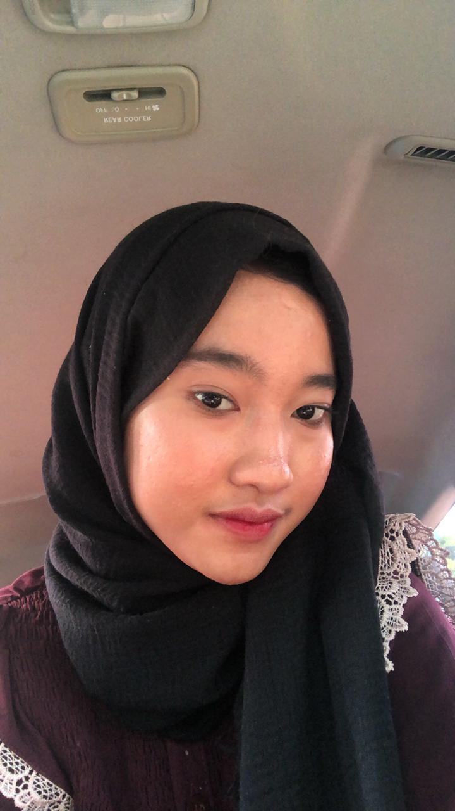
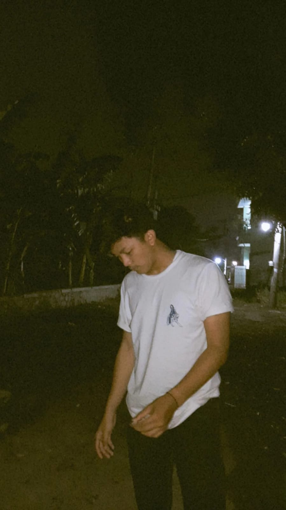
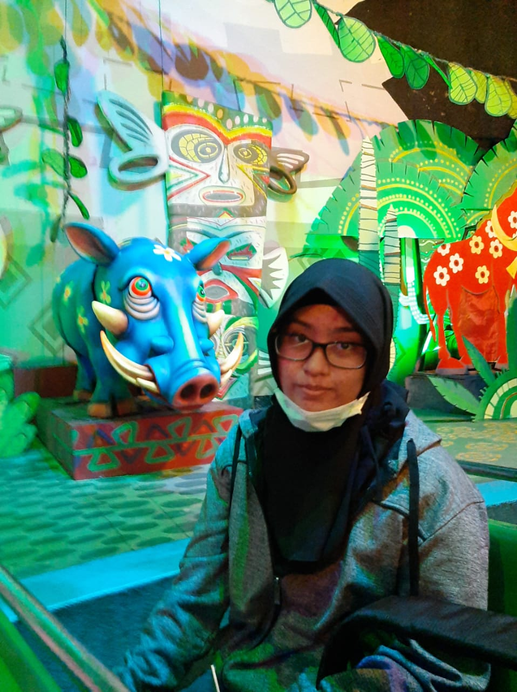
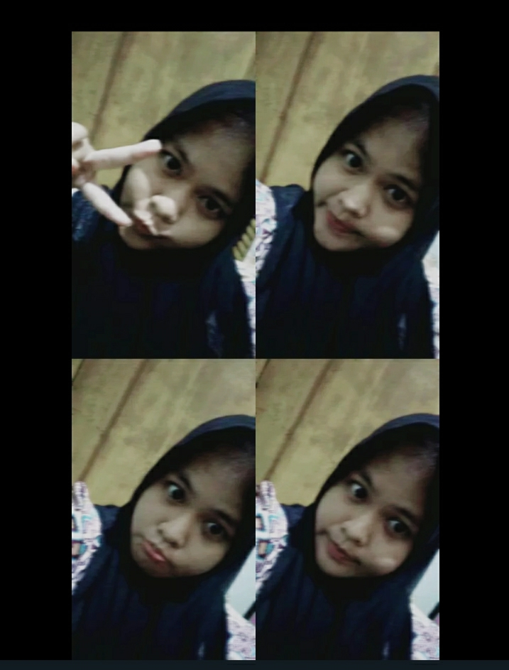
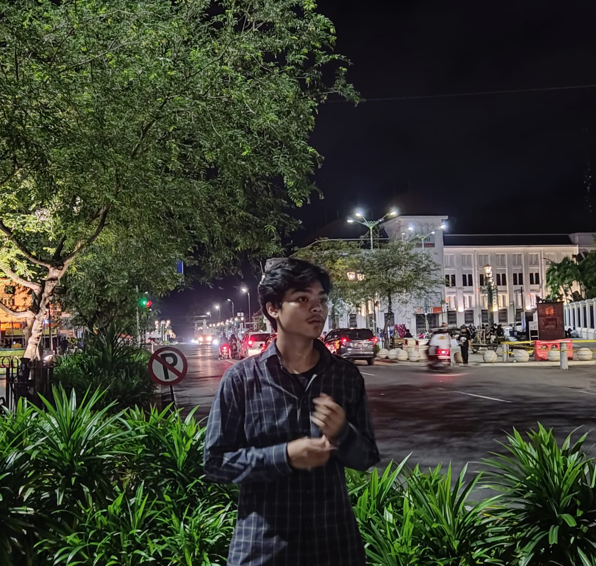
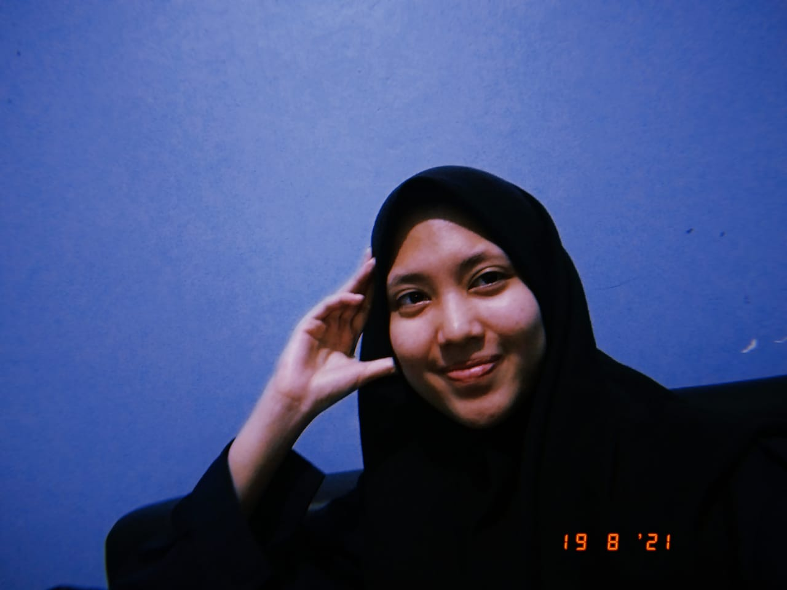

DESTA PUSPITA LISTY
Bekasi, 25 desember 2003kuliah lo ambil apa? gue sih ambil hikmah nya aja.

MUHAMMAD QOID NABHAN
Jakarta, 24 Desember 2002cita-cita lulus cepet pokoknya.
MUHAMMAD AIDIL
Bekasi, 26 Desember 2002meh.
PUTRI CINDY NAJWA SALSABILAH
Jakarta, 7 maret 2003hidup biasa aja allhamdulillah.

RAGIL SARASTYA PUTRI
Jakarta, 20 Februari 2003Cita-cita ingin jadi pelukis.

SHELLA AYU PERTIWI
Jakarta, 30 April 2002Cita-cita ingin jadi penyiar radio.

ZAYYIM ARIEF
Bekasi, 06 September 2003becita cita ingin menjadi pengusaha sukses.

NAILAH AMANDA PUTRI
Depok, 17 September 2003Gak bisa baca google maps.